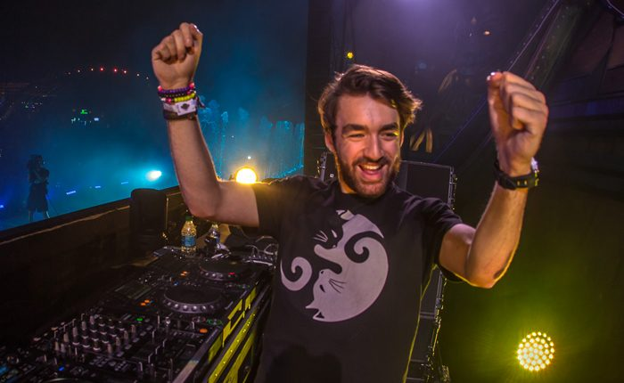

Exclusive Oliver Heldens EDC Las Vegas 2017 Mix + Interview


Heldens is positioned to have a huge impact on festival culture this year. While his appearance at EDC Las Vegas 2017 weighs heavily as one of the biggest gigs on his calendar, he’s otherwise got what he calls a “crazy” summer coming up. In addition to festival appearances all over the place, he’ll be fronting up several of his own Heldeep Island festival stages, as well as his own Ibiza residency at the rebranded Space Ibiza venue (known this year forward as Hï Ibiza).
Wherever he’s playing, Heldens says we can expect to hear plenty of HI-LO productions in his sets, alongside the more familiar and catchy productions he’s released under his own name.
“With the way that I’m playing at the moment, there’s definitely space for a few HI-LO tracks in my sets,” he says. “I like to take it clubby in my sets, and even drop a few techno tunes in there when I can and the crowd mood is right. It’s all very high-energy with what I’m playing, but also very danceable. Most of the stuff that I play has a kind of funk to it.”
One kindred spirit that Heldens has found in his quest to explore the edgier side of the big-room sound has been countryman Sander van Doorn. While Doorn had been largely focused on EDM the past few years, he’s recently returned to the edgier, tougher, darker sounds that defined his early years as a tech-trance pioneer. This has put the veteran DJ/producer on the same page as Heldens, and the two collaborated successfully on “WTF” last year. However, Heldens says the connection goes a little deeper for him.